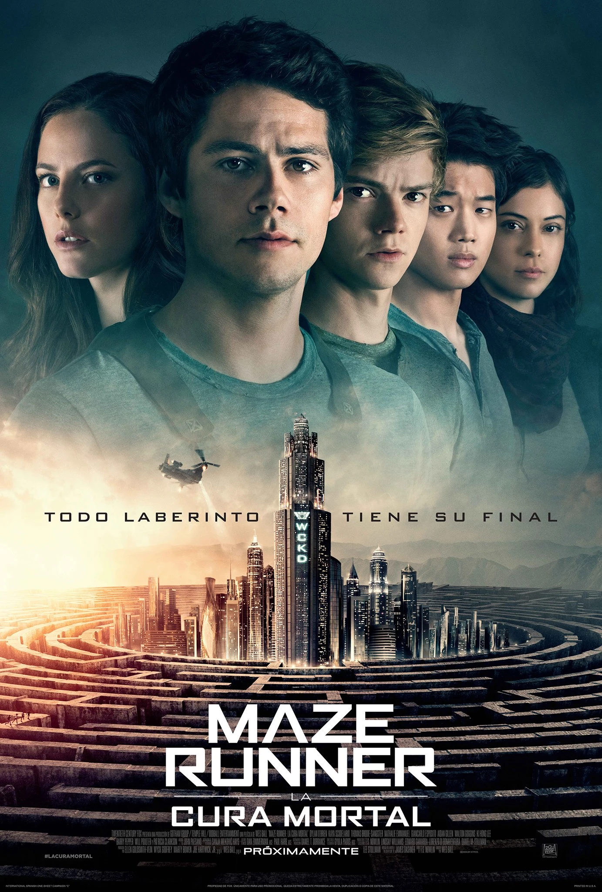

Un espacio verde rodeado por enormes muros de piedra. Está habitado por un grupo de chicos que, al igual que Thomas, no recuerdan nada de su pasado excepto su nombre. Un gigantesco y complejo laberinto que rodea el Claro. Sus muros se mueven y cambian de posición cada noche, cuando los enormes portones se cierran. Aterradoras criaturas biomecánicas que acechan en el interior del laberinto durante la noche. Cada mes llega un nuevo chico al Claro a través del ascensor. Sin embargo, poco después de la llegada de Thomas, una chica llamada Teresa aparece con un extraño mensaje que dice que es la última. Un grupo selecto de chicos que arriesgan su vida ingresando al laberinto de día para mapearlo y buscar una salida antes de que los muros se cierren.
REGRESAR